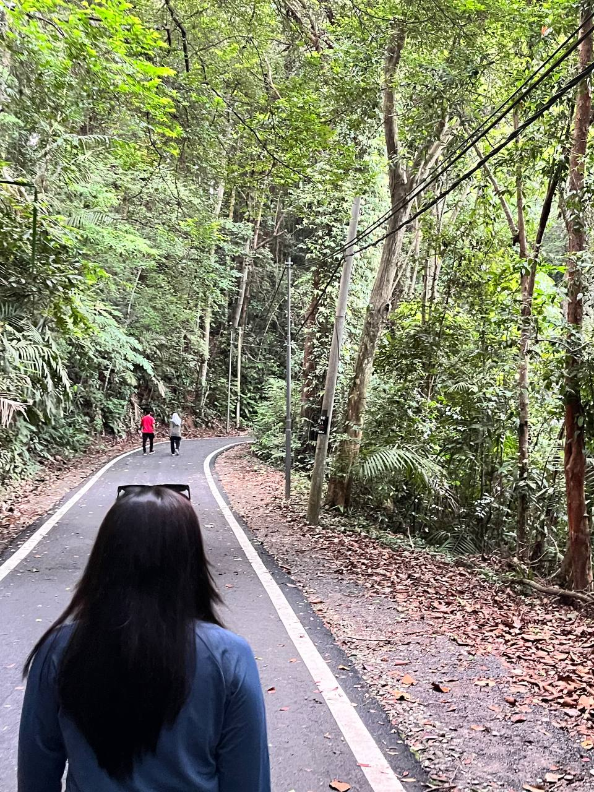
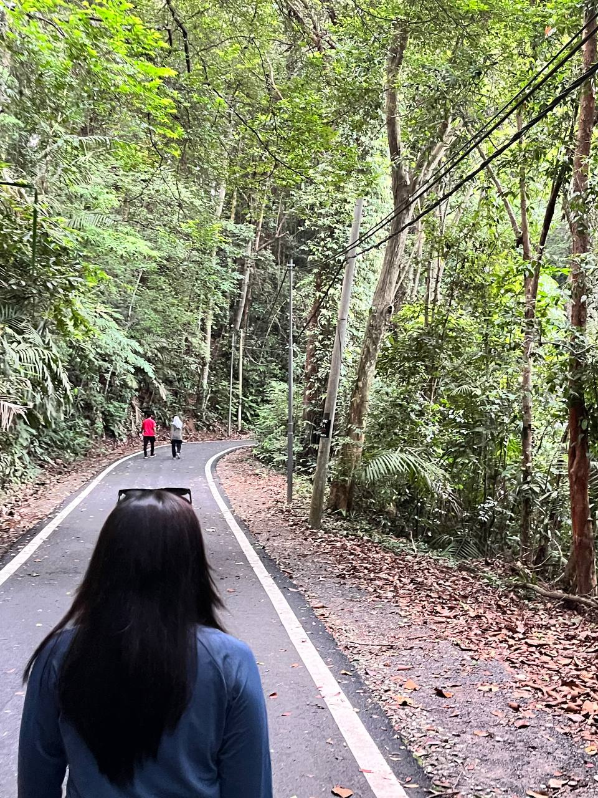

SK Agama, Sibu
Primary School
I spent half of my primary school here in SK Agama. My mom was an English teacher there since the year 2000. I was so lucky that I got to step my foot in a school for the first time with my mom there to monitor my learning. I maintained my capability to achieve best results every year thanks to my teachers and friends. I had a wonderful primary school memory.
SMK Putrajaya Presint 8(1), Putrajaya
Secondary School
I got transferred from Sarawak to Putrajaya at the end of my primary school year. My mom was offered to teach in a school located at Bandar Baru Bangi. i met new friends and bestfriends here too. my high school life is not as fun as my primary school as I was adulting but i still had an unforgettable time.
UiTM Kampus Rembau, Negeri Sembilan
University
Thankfully I got into UiTM Kampus Rembau to further my diploma after I was done with highschool. I got accepted in Diploma in Information Management which was my first choice when I applied for university. My uncle and aunty was in the same course and they convinced me to be in the same field as them. At first it was quite challenging for me to adapt to this course as I have no knowledge regarding it at all. but as time passes by, i think i got the hang of it already and here I am on my last semester!


 
